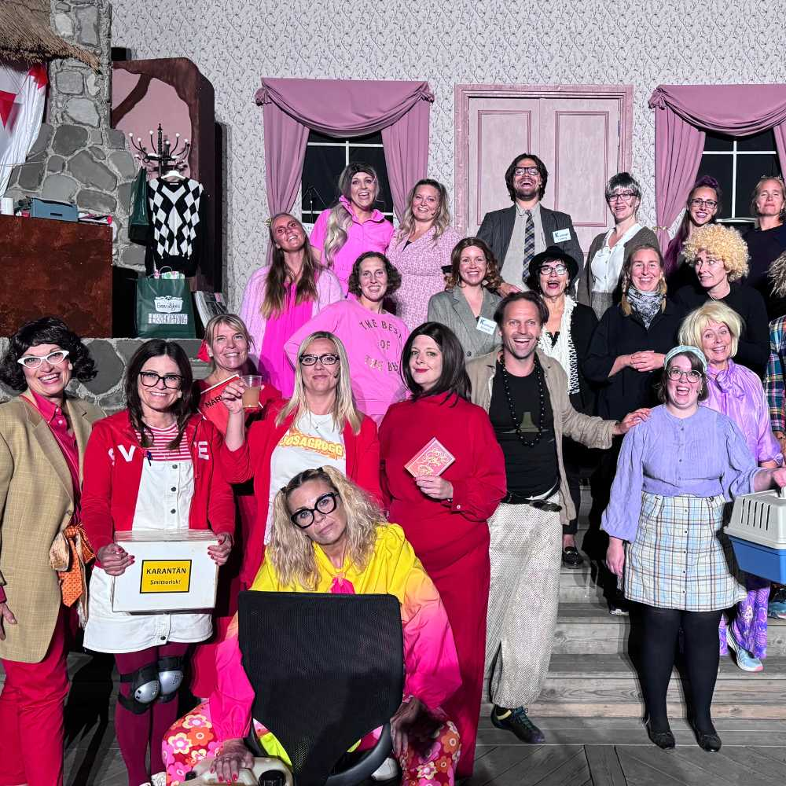
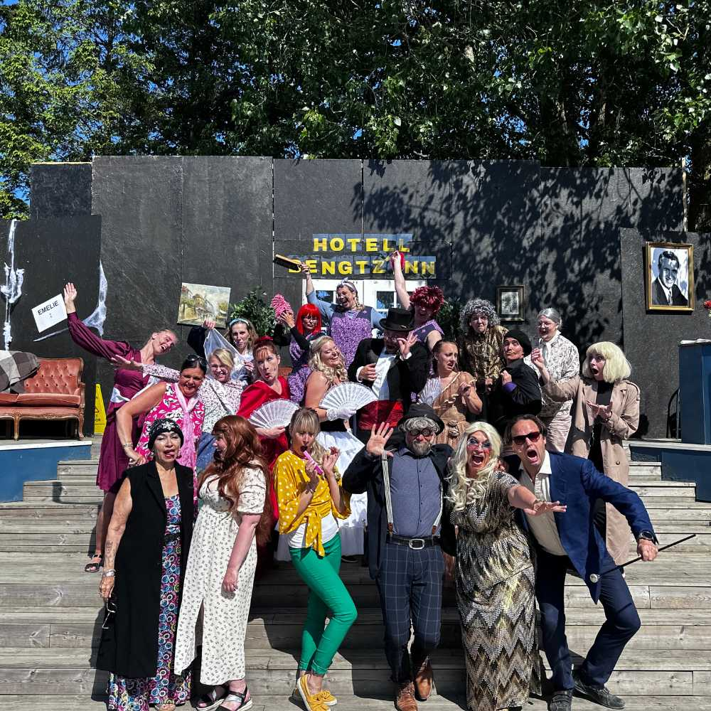
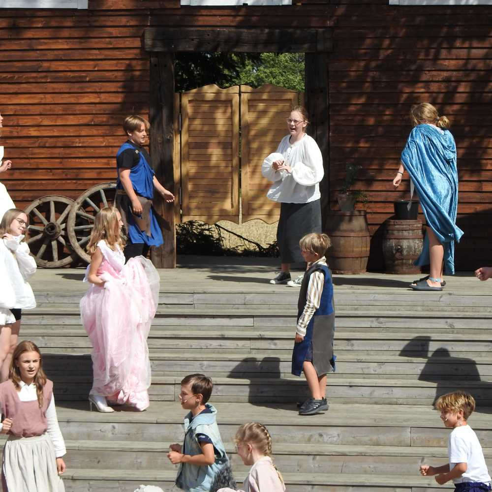
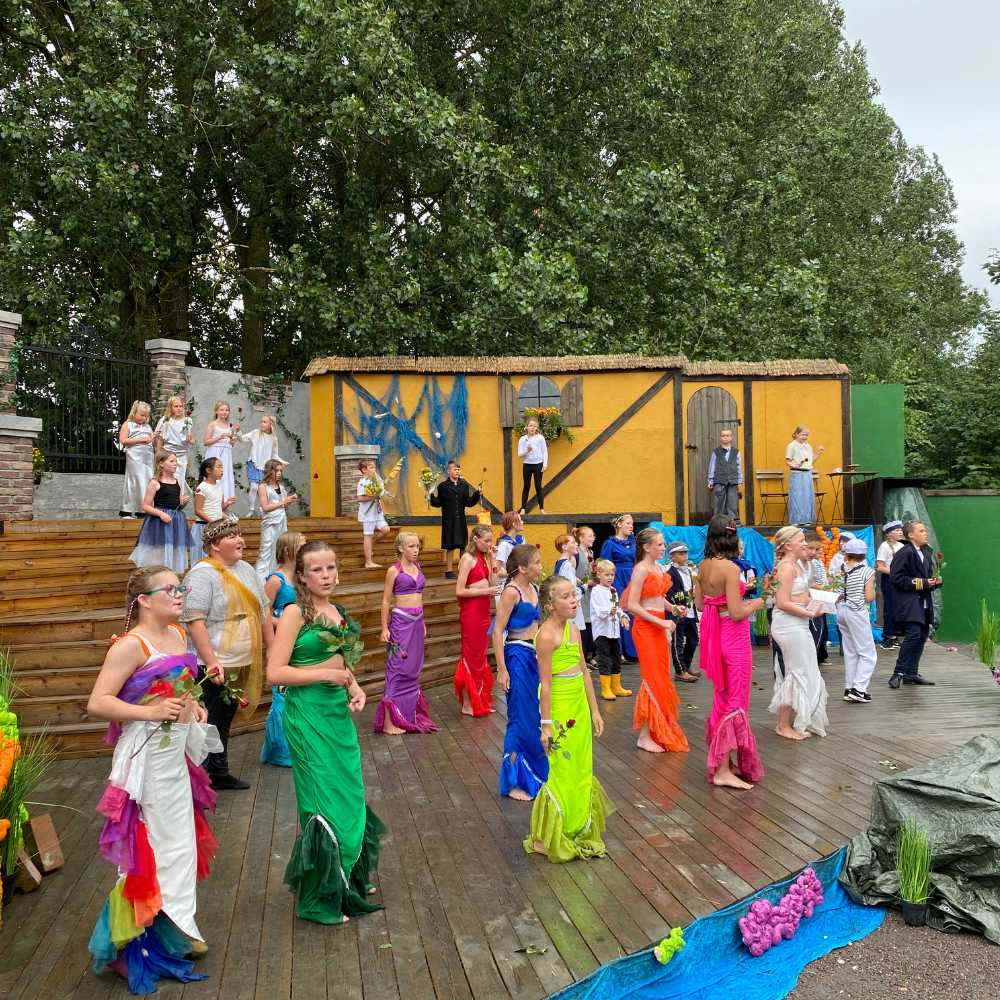
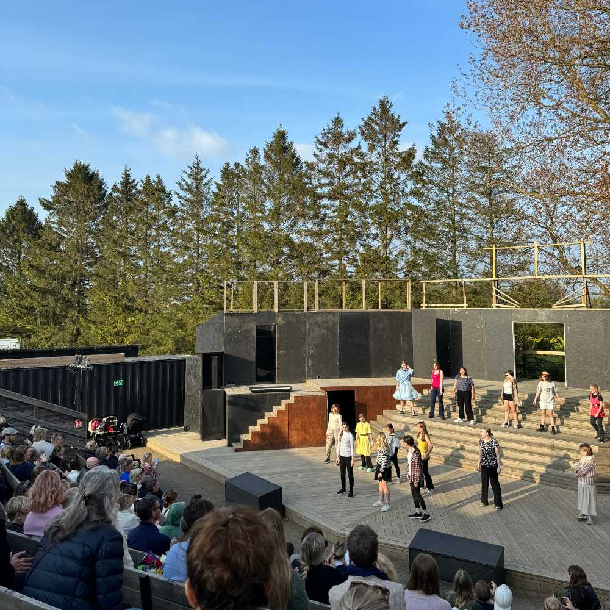
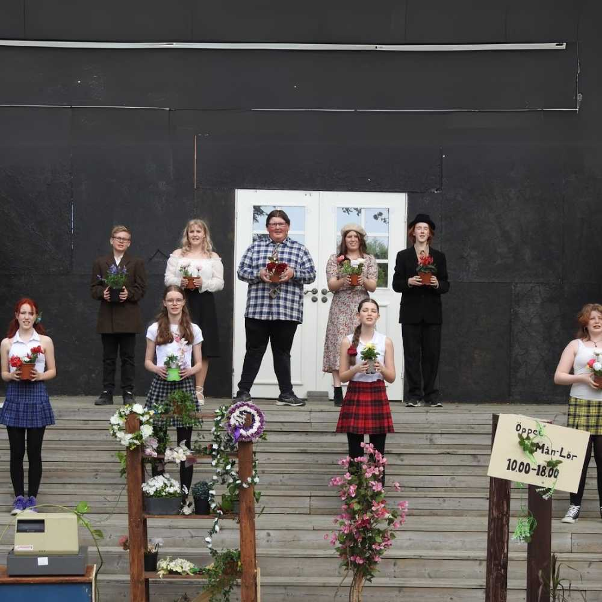
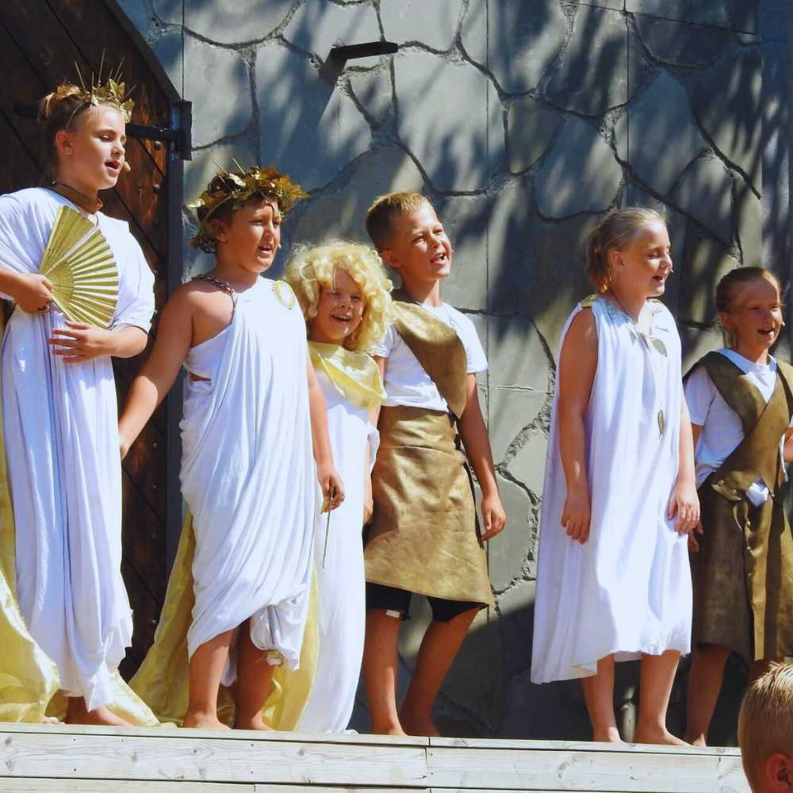
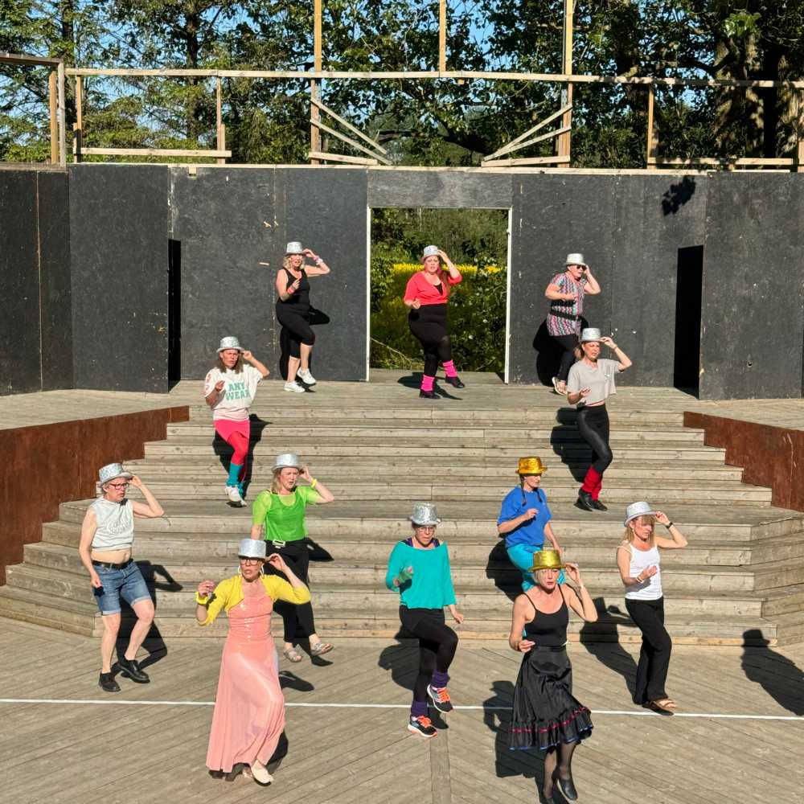

INFÖR TERMINSSTART
Välkommen till Teaterskolan!
All praktisk information du behöver inför din (eller ditt barns) tid hos oss — om anmälan, lokaler, MyClub, terminsavslutningar och vår gemenskap. Spara länken, så slipper du leta efter ett pdf-brev i mailkorgen.
Hej och välkommen!
Vi är så glada att du är här.
Vi är oerhört glada över att du har valt att bli en del av vår Teaterskola! Under din tid här får du utforska och fördjupa din förståelse för teater genom att lära dig färdigheter och tekniker som du kan bära med dig genom hela livet.
Den här sidan ersätter det informationsbrev som tidigare skickades som ett pdf-dokument i samband med anmälan. Här samlar vi allt du behöver veta — och hit kan du alltid återkomma under terminen.




Anmälan
Bindande anmälan — med 14 dagars ångerrätt.
När du anmäler dig till Teaterskolan är anmälan bindande, men du har en ångerrätt på 14 dagar från köpdatumet.
Om du vill avboka din plats och få full återbetalning behöver det göras senast två dagar efter det första kurstillfället (provtillfället). Efter denna period är det inte längre möjligt att få full återbetalning, eftersom vi då inte kan erbjuda platsen till någon annan.
Lokaler
Björnstjernegatan 18, Ystad.
Teaterskolans verksamhet finns på Björnstjernegatan 18 — i Sommarteaterns replokaler på regementsområdet i Ystad. Vi finns i KFUM-huset bredvid Ystad Studios, med ingången på mitten av långsidan mot parkeringen.
Din grupp
Samma dag och tid varje vecka.
Dina teaterlektioner ligger på den dag och tid du valde vid anmälan, och återkommer varje vecka under terminen. Är du osäker på vilken grupp du eller ditt barn tillhör hittar du informationen genom att logga in på MyClub.se, eller genom att kontakta verksamhetschef.
Kursernas upplägg
Läs om syfte och mål för din kurs.
Varje kurs har sin egen sida med information om upplägg, syfte och mål för terminen. Hitta din grupp nedan.
Terminsavslutning
Mot en föreställning — tillsammans.
Varje grupp på Teaterskolan arbetar mot ett gemensamt mål i slutet av terminen: att stå på scen inför publik.
Steg 1 och Steg 2 — höstshow på stor scen
Steg 1 och Steg 2 avslutar höstterminen tillsammans med en gemensam höstshow på en stor teaterscen i Ystad. Istället för att varje grupp sätter upp en egen, mindre föreställning samlas alla åldrar i en större helhet där varje grupp bidrar med en egen scen — barn och ungdomar från hela Teaterskolan, på samma scen, inför släkt, familj och vänner.
Övriga grupper — föreställning i Öja
Steg 3, Steg Vuxen, Musikalgrupperna och SeniorTeater sätter upp varsin föreställning på Sommarteaterns utomhusscen i Öja. Det är en stor händelse, och dessa grupper läser sin kurs under ett helt läsår — både höst- och vårtermin — för att till slut sätta upp sin föreställning i maj månad.




Exakta datum och tider för terminens avslutningar publiceras i god tid via MyClub och på respektive kurssida.
Ledare
Erfarna skådespelare från Sommarteaterns ensemble.
Våra ledare är erfarna skådespelare från Sommarteaterns ensemble — har du sett några av våra senaste familjemusikaler på scenen i Öja känner du säkert igen flera av dem. Med stor kunskap inom teater, sång och musikal vägleder de dig genom din tid på Teaterskolan.
Möt våra ledare →MyClub
Allt samlat på ett ställe.
MyClub är plattformen där vi administrerar alla elever och vårdnadshavare — här hittar du kalender, fakturor, kontaktuppgifter och repetitionsmaterial.
Kom igång
- Är du ny på Teaterskolan? Gå till myclub.se och klicka på "Skapa konto".
- Använd samma e-postadress som du angav vid anmälan, så kopplas kontot automatiskt till rätt elev.
- Svara på inbjudningar till repetitioner inför varje tillfälle — särskilt viktigt vid sjukdom eller ledighet.
- Håll dina kontaktuppgifter uppdaterade så att du inte missar information från ledarna.
Bra att veta
- Fakturor för medlems- och kursavgift skickas via MyClub och e-post i samband med anmälan.
- Under fliken "Filer" hittar du repetitionsmaterial som manus och låttexter efter terminsstart.
- Under "Gruppmedlemmar" hittar du kontaktuppgifter till ledare och övriga i gruppen.
- Prenumerera på kalendern i telefonen: öppna appen → Kalender → Inbjudningar → scrolla ner till "Prenumerera på inbjudningar".
Stöd
Teaterskolan drivs av Sommarteatern, med stöd av Medborgarskolan.
Teaterskolan drivs helt av Sommarteatern i Ystad. Genom vårt medlemskap i Medborgarskolan får verksamheten ett årligt ekonomiskt bidrag, och alla elever och ledare omfattas av en försäkring under kursernas gång.
Som en del av Medborgarskolans kvalitetsarbete genomförs regelbundna enkätundersökningar bland våra medlemmar — blir du kontaktad kan det ske via telefon eller e-post. Vi värnar om din integritet: kontaktuppgifter som lämnas vid anmälan delas endast med Sommarteatern och Medborgarskolan.
Trygghet och gemenskap
En plats där alla behövs.
Vår värdegrund: alla deltagare är lika viktiga, oavsett roll. Det är genom samarbete och gemenskap vi når våra mål — både på scenen och bakom kulisserna.
Engagemang och positiv attityd
Kom till repetitionerna med en öppen och positiv attityd — ditt engagemang och din entusiasm spelar stor roll. Vi lär oss och utvecklas tillsammans, både på scenen och bakom kulisserna.
Respekt för varandra
Alla deltagare ska bemötas med respekt och vänlighet. Mobbning och trakasserier tolereras inte. Upptäcker du något som inte känns bra — prata genast med en ledare eller verksamhetschef.
Repetitionsrummet är dömandefritt
Inom replokalens väggar ska alla våga testa och misslyckas för att utvecklas. Vi stöttar och peppar varandra — och dömer inte.
Läs mer om vår fullständiga värdegrund och våra policyer på sidan Vision & Policy.
Bra att veta
Några sista praktiska detaljer.
Insläpp till teaterlokalen
Eftersom flera grupper delar samma lokaler sker insläpp i samband med gruppstart. Kommer du tidigt är du välkommen att vänta i hallen.
Föräldrars närvaro under repetitioner
Föräldrar och anhöriga sitter inte med under repetitionerna — det skapar en trygg miljö där eleverna vågar testa och utforska. Vänta gärna i hallen under tiden. (Gäller inte TeaterKidz, som har andra förutsättningar.)
Kommunikation med ledarna
Har du frågor eller funderingar kring verksamheten — prata med ledarna! De finns där för att stötta dig och göra din tid på Teaterskolan så bra som möjligt.
Drogfri miljö
Föreningen är helt drogfri. Vi vill skapa en trygg och hälsosam miljö för alla deltagare, ledare och besökare.
Frågor?
Vi finns här för dig.
Har du frågor om anmälan, lokaler, MyClub eller något annat inför terminsstart — hör av dig till verksamhetschef Hannes Nilsson.